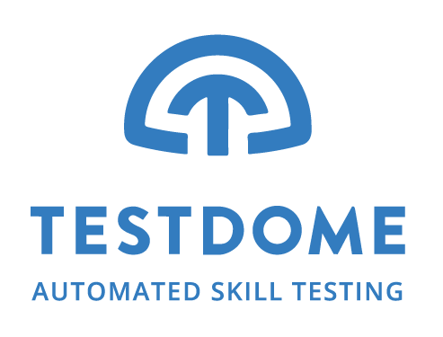

Techtonic Apprenticeship Technical Screen - Part 2
- Deadline: The test must be completed before Sep 17, 09:00 (CDT, 24-hour clock).
- IDE: We recommend having an environment ready, so you can solve problems outside of browser.
- Resources: You can use help files and other resources that you normally use.
- Test duration: 2h (no breaks allowed)